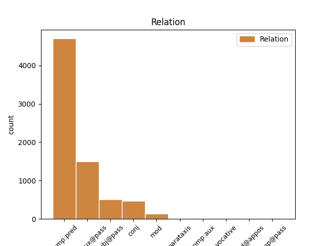
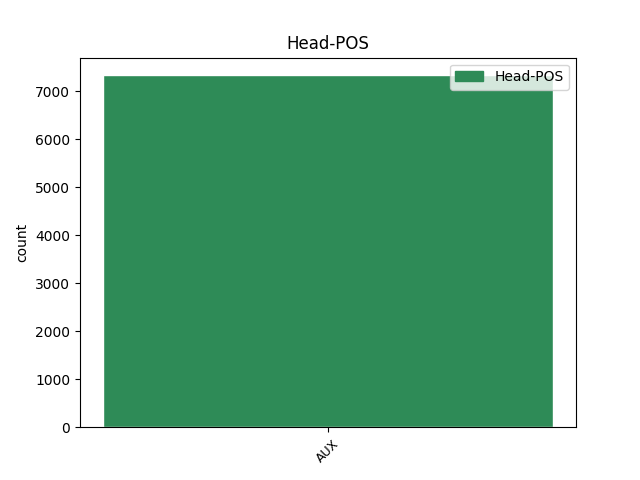
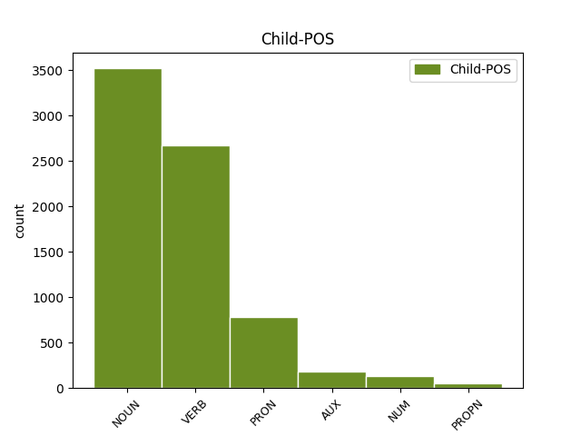

Distribution of features within this leaf



Agreement Rules sorted by frequency.
- When the dependent token is the predicative complements(comp:pred) of the head token, and the head token is AUX and the dependent token is NOUN.
1 si _ _ _ _ 0 _ _ _
2 autem _ _ _ _ 0 _ _ _
3 secundum _ _ _ _ 0 _ _ _
4 aliquid _ _ _ _ 0 _ _ _
5 sui _ _ _ _ 0 _ _ _
6 sit _ _ _ _ 0 _ _ _
7 forma _ _ _ _ 0 _ _ _
8 , _ _ _ _ 0 _ _ _
9 id _ _ _ _ 0 _ _ _
10 quod _ _ _ _ 0 _ _ _
11 est _ _ _ _ 0 _ _ _
12 forma _ _ _ _ 0 _ _ _
13 dicimus _ _ _ _ 0 _ _ _
14 animam _ _ _ _ 0 _ _ _
15 , _ _ _ _ 0 _ _ _
16 et _ _ _ _ 0 _ _ _
17 id _ _ _ _ 0 _ _ _
18 cuius _ _ _ _ 0 _ _ _
19 est sum AUX N3|modA|tem1|gen6 Mood=Ind|Number=Sing|Person=3|Tense=Pres|VerbForm=Fin|Voice=Act 0 _ _ _
20 forma forma NOUN A1|grn1|casA|gen2 Case=Nom|Degree=Pos|Gender=Fem|Number=Sing 19 comp:pred _ _
21 dicimus _ _ _ _ 0 _ _ _
22 primum _ _ _ _ 0 _ _ _
23 animatum _ _ _ _ 0 _ _ _
24 , _ _ _ _ 0 _ _ _
25 ut _ _ _ _ 0 _ _ _
26 supra _ _ _ _ 0 _ _ _
27 dictum _ _ _ _ 0 _ _ _
28 est _ _ _ _ 0 _ _ _
29 . _ _ _ _ 0 _ _ _
1 si _ _ _ _ 0 _ _ _
2 autem _ _ _ _ 0 _ _ _
3 secundum _ _ _ _ 0 _ _ _
4 aliquid _ _ _ _ 0 _ _ _
5 sui _ _ _ _ 0 _ _ _
6 sit _ _ _ _ 0 _ _ _
7 forma _ _ _ _ 0 _ _ _
8 , _ _ _ _ 0 _ _ _
9 id _ _ _ _ 0 _ _ _
10 quod _ _ _ _ 0 _ _ _
11 est _ _ _ _ 0 _ _ _
12 forma _ _ _ _ 0 _ _ _
13 dicimus _ _ _ _ 0 _ _ _
14 animam _ _ _ _ 0 _ _ _
15 , _ _ _ _ 0 _ _ _
16 et _ _ _ _ 0 _ _ _
17 id _ _ _ _ 0 _ _ _
18 cuius _ _ _ _ 0 _ _ _
19 est _ _ _ _ 0 _ _ _
20 forma _ _ _ _ 0 _ _ _
21 dicimus _ _ _ _ 0 _ _ _
22 primum _ _ _ _ 0 _ _ _
23 animatum _ _ _ _ 0 _ _ _
24 , _ _ _ _ 0 _ _ _
25 ut _ _ _ _ 0 _ _ _
26 supra _ _ _ _ 0 _ _ _
27 dictum dico VERB N2|modM|tem4|grp1|casA|gen3 Aspect=Perf|Case=Nom|Degree=Pos|Gender=Neut|Number=Sing|Tense=Past|VerbForm=Part|Voice=Pass 28 comp:aux@pass _ _
28 est sum AUX N3|modA|tem1|gen6 Mood=Ind|Number=Sing|Person=3|Tense=Pres|VerbForm=Fin|Voice=Act 0 _ _ _
29 . _ _ _ _ 0 _ _ _
1 cum _ _ _ _ 0 _ _ _
2 enim _ _ _ _ 0 _ _ _
3 forma _ _ _ _ 0 _ _ _
4 sit _ _ _ _ 0 _ _ _
5 actus _ _ _ _ 0 _ _ _
6 , _ _ _ _ 0 _ _ _
7 materia _ _ _ _ 0 _ _ _
8 vero _ _ _ _ 0 _ _ _
9 sit _ _ _ _ 0 _ _ _
10 ens _ _ _ _ 0 _ _ _
11 in _ _ _ _ 0 _ _ _
12 potentia _ _ _ _ 0 _ _ _
13 tantum _ _ _ _ 0 _ _ _
14 ; _ _ _ _ 0 _ _ _
15 nullo _ _ _ _ 0 _ _ _
16 modo _ _ _ _ 0 _ _ _
17 id _ _ _ _ 0 _ _ _
18 quod _ _ _ _ 0 _ _ _
19 est sum AUX N3|modA|tem1|gen6 Mood=Ind|Number=Sing|Person=3|Tense=Pres|VerbForm=Fin|Voice=Act 0 _ _ _
20 ex _ _ _ _ 0 _ _ _
21 materia _ _ _ _ 0 _ _ _
22 et _ _ _ _ 0 _ _ _
23 forma _ _ _ _ 0 _ _ _
24 compositum compono VERB L2|modM|tem4|grp1|casA|gen3 Aspect=Perf|Case=Nom|Degree=Pos|Gender=Neut|Number=Sing|Tense=Past|VerbForm=Part|Voice=Pass 19 comp:pred _ SpaceAfter=No
25 , _ _ _ _ 0 _ _ _
26 potest _ _ _ _ 0 _ _ _
27 esse _ _ _ _ 0 _ _ _
28 alterius _ _ _ _ 0 _ _ _
29 forma _ _ _ _ 0 _ _ _
30 secundum _ _ _ _ 0 _ _ _
31 se _ _ _ _ 0 _ _ _
32 totum _ _ _ _ 0 _ _ _
33 . _ _ _ _ 0 _ _ _
1 secundo _ _ _ _ 0 _ _ _
2 quia _ _ _ _ 0 _ _ _
3 , _ _ _ _ 0 _ _ _
4 cum _ _ _ _ 0 _ _ _
5 socrates _ _ _ _ 0 _ _ _
6 sit sum AUX N3|modB|tem1|gen6 Mood=Sub|Number=Sing|Person=3|Tense=Pres|VerbForm=Fin|Voice=Act 0 _ _ _
7 quoddam quidam PRON F1|grn1|casA|gen3|varA Case=Nom|Degree=Pos|Gender=Neut|Number=Sing|PronType=Ind 6 comp:pred _ _
8 individuum _ _ _ _ 0 _ _ _
9 in _ _ _ _ 0 _ _ _
10 natura _ _ _ _ 0 _ _ _
11 cuius _ _ _ _ 0 _ _ _
12 essentia _ _ _ _ 0 _ _ _
13 est _ _ _ _ 0 _ _ _
14 una _ _ _ _ 0 _ _ _
15 , _ _ _ _ 0 _ _ _
16 composita _ _ _ _ 0 _ _ _
17 ex _ _ _ _ 0 _ _ _
18 materia _ _ _ _ 0 _ _ _
19 et _ _ _ _ 0 _ _ _
20 forma _ _ _ _ 0 _ _ _
21 ; _ _ _ _ 0 _ _ _
1 unde _ _ _ _ 0 _ _ _
2 per _ _ _ _ 0 _ _ _
3 hoc _ _ _ _ 0 _ _ _
4 quod _ _ _ _ 0 _ _ _
5 dicitur _ _ _ _ 0 _ _ _
6 , _ _ _ _ 0 _ _ _
7 congregentur _ _ _ _ 0 _ _ _
8 aquae _ _ _ _ 0 _ _ _
9 , _ _ _ _ 0 _ _ _
10 et _ _ _ _ 0 _ _ _
11 appareat _ _ _ _ 0 _ _ _
12 arida _ _ _ _ 0 _ _ _
13 , _ _ _ _ 0 _ _ _
14 intelligitur _ _ _ _ 0 _ _ _
15 quod _ _ _ _ 0 _ _ _
16 materiae _ _ _ _ 0 _ _ _
17 corporali _ _ _ _ 0 _ _ _
18 impressa _ _ _ _ 0 _ _ _
19 est sum AUX N3|modA|tem1|gen6 Mood=Ind|Number=Sing|Person=3|Tense=Pres|VerbForm=Fin|Voice=Act 0 _ _ _
20 forma forma NOUN A1|grn1|casA|gen2 Case=Nom|Degree=Pos|Gender=Fem|Number=Sing 19 subj@pass _ _
21 substantialis _ _ _ _ 0 _ _ _
22 aquae _ _ _ _ 0 _ _ _
23 , _ _ _ _ 0 _ _ _
24 per _ _ _ _ 0 _ _ _
25 quam _ _ _ _ 0 _ _ _
26 competit _ _ _ _ 0 _ _ _
27 sibi _ _ _ _ 0 _ _ _
28 talis _ _ _ _ 0 _ _ _
29 motus _ _ _ _ 0 _ _ _
30 ; _ _ _ _ 0 _ _ _
31 et _ _ _ _ 0 _ _ _
32 forma _ _ _ _ 0 _ _ _
33 substantialis _ _ _ _ 0 _ _ _
34 terrae _ _ _ _ 0 _ _ _
35 , _ _ _ _ 0 _ _ _
36 per _ _ _ _ 0 _ _ _
37 quam _ _ _ _ 0 _ _ _
38 competit _ _ _ _ 0 _ _ _
39 sibi _ _ _ _ 0 _ _ _
40 sic _ _ _ _ 0 _ _ _
41 videri _ _ _ _ 0 _ _ _
42 . _ _ _ _ 0 _ _ _
1 secundo _ _ _ _ 0 _ _ _
2 quia _ _ _ _ 0 _ _ _
3 , _ _ _ _ 0 _ _ _
4 cum _ _ _ _ 0 _ _ _
5 socrates _ _ _ _ 0 _ _ _
6 sit _ _ _ _ 0 _ _ _
7 quoddam _ _ _ _ 0 _ _ _
8 individuum _ _ _ _ 0 _ _ _
9 in _ _ _ _ 0 _ _ _
10 natura _ _ _ _ 0 _ _ _
11 cuius _ _ _ _ 0 _ _ _
12 essentia _ _ _ _ 0 _ _ _
13 est sum AUX N3|modA|tem1|gen6 Mood=Ind|Number=Sing|Person=3|Tense=Pres|VerbForm=Fin|Voice=Act 0 _ _ _
14 una _ _ _ _ 0 _ _ _
15 , _ _ _ _ 0 _ _ _
16 composita compono VERB L2|modM|tem4|grp1|casA|gen2 Aspect=Perf|Case=Nom|Degree=Pos|Gender=Fem|Number=Sing|Tense=Past|VerbForm=Part|Voice=Pass 13 conj _ _
17 ex _ _ _ _ 0 _ _ _
18 materia _ _ _ _ 0 _ _ _
19 et _ _ _ _ 0 _ _ _
20 forma _ _ _ _ 0 _ _ _
21 ; _ _ _ _ 0 _ _ _
1 in _ _ _ _ 0 _ _ _
2 agentibus _ _ _ _ 0 _ _ _
3 autem _ _ _ _ 0 _ _ _
4 per _ _ _ _ 0 _ _ _
5 voluntatem _ _ _ _ 0 _ _ _
6 , _ _ _ _ 0 _ _ _
7 quod qui PRON F1|grn1|casA|gen3 Case=Nom|Degree=Pos|Gender=Neut|Number=Sing|PronType=Rel 9 subj@pass _ _
8 conceptum _ _ _ _ 0 _ _ _
9 est sum AUX N3|modA|tem1|gen6 Mood=Ind|Number=Sing|Person=3|Tense=Pres|VerbForm=Fin|Voice=Act 0 _ _ _
10 et _ _ _ _ 0 _ _ _
11 praedefinitum _ _ _ _ 0 _ _ _
12 , _ _ _ _ 0 _ _ _
13 accipitur _ _ _ _ 0 _ _ _
14 ut _ _ _ _ 0 _ _ _
15 forma _ _ _ _ 0 _ _ _
16 quae _ _ _ _ 0 _ _ _
17 est _ _ _ _ 0 _ _ _
18 principium _ _ _ _ 0 _ _ _
19 actionis _ _ _ _ 0 _ _ _
20 . _ _ _ _ 0 _ _ _
1 cum _ _ _ _ 0 _ _ _
2 enim _ _ _ _ 0 _ _ _
3 forma _ _ _ _ 0 _ _ _
4 sit sum AUX N3|modB|tem1|gen6 Mood=Sub|Number=Sing|Person=3|Tense=Pres|VerbForm=Fin|Voice=Act 0 _ _ _
5 actus _ _ _ _ 0 _ _ _
6 , _ _ _ _ 0 _ _ _
7 materia _ _ _ _ 0 _ _ _
8 vero _ _ _ _ 0 _ _ _
9 sit sum AUX N3|modB|tem1|gen6 Mood=Sub|Number=Sing|Person=3|Tense=Pres|VerbForm=Fin|Voice=Act 4 conj _ _
10 ens _ _ _ _ 0 _ _ _
11 in _ _ _ _ 0 _ _ _
12 potentia _ _ _ _ 0 _ _ _
13 tantum _ _ _ _ 0 _ _ _
14 ; _ _ _ _ 0 _ _ _
15 nullo _ _ _ _ 0 _ _ _
16 modo _ _ _ _ 0 _ _ _
17 id _ _ _ _ 0 _ _ _
18 quod _ _ _ _ 0 _ _ _
19 est _ _ _ _ 0 _ _ _
20 ex _ _ _ _ 0 _ _ _
21 materia _ _ _ _ 0 _ _ _
22 et _ _ _ _ 0 _ _ _
23 forma _ _ _ _ 0 _ _ _
24 compositum _ _ _ _ 0 _ _ _
25 , _ _ _ _ 0 _ _ _
26 potest _ _ _ _ 0 _ _ _
27 esse _ _ _ _ 0 _ _ _
28 alterius _ _ _ _ 0 _ _ _
29 forma _ _ _ _ 0 _ _ _
30 secundum _ _ _ _ 0 _ _ _
31 se _ _ _ _ 0 _ _ _
32 totum _ _ _ _ 0 _ _ _
33 . _ _ _ _ 0 _ _ _
1 hoc _ _ _ _ 0 _ _ _
2 ergo _ _ _ _ 0 _ _ _
3 principium _ _ _ _ 0 _ _ _
4 quo _ _ _ _ 0 _ _ _
5 primo _ _ _ _ 0 _ _ _
6 intelligimus _ _ _ _ 0 _ _ _
7 , _ _ _ _ 0 _ _ _
8 sive _ _ _ _ 0 _ _ _
9 dicatur dico VERB N3|modK|tem1|gen6 Mood=Sub|Number=Sing|Person=3|Tense=Pres|VerbForm=Fin|Voice=Pass 15 mod _ _
10 intellectus _ _ _ _ 0 _ _ _
11 sive _ _ _ _ 0 _ _ _
12 anima _ _ _ _ 0 _ _ _
13 intellectiva _ _ _ _ 0 _ _ _
14 , _ _ _ _ 0 _ _ _
15 est sum AUX N3|modA|tem1|gen6 Mood=Ind|Number=Sing|Person=3|Tense=Pres|VerbForm=Fin|Voice=Act 0 _ _ _
16 forma _ _ _ _ 0 _ _ _
17 corporis _ _ _ _ 0 _ _ _
18 . _ _ _ _ 0 _ _ _
1 secundo _ _ _ _ 0 _ _ _
2 quia _ _ _ _ 0 _ _ _
3 , _ _ _ _ 0 _ _ _
4 cum _ _ _ _ 0 _ _ _
5 socrates _ _ _ _ 0 _ _ _
6 sit _ _ _ _ 0 _ _ _
7 quoddam _ _ _ _ 0 _ _ _
8 individuum _ _ _ _ 0 _ _ _
9 in _ _ _ _ 0 _ _ _
10 natura _ _ _ _ 0 _ _ _
11 cuius _ _ _ _ 0 _ _ _
12 essentia _ _ _ _ 0 _ _ _
13 est sum AUX N3|modA|tem1|gen6 Mood=Ind|Number=Sing|Person=3|Tense=Pres|VerbForm=Fin|Voice=Act 0 _ _ _
14 una unus NUM F1|grn1|casA|gen2 Case=Nom|Degree=Pos|Gender=Fem|Number=Sing|NumType=Card 13 comp:pred _ SpaceAfter=No
15 , _ _ _ _ 0 _ _ _
16 composita _ _ _ _ 0 _ _ _
17 ex _ _ _ _ 0 _ _ _
18 materia _ _ _ _ 0 _ _ _
19 et _ _ _ _ 0 _ _ _
20 forma _ _ _ _ 0 _ _ _
21 ; _ _ _ _ 0 _ _ _
1 et _ _ _ _ 0 _ _ _
2 ita _ _ _ _ 0 _ _ _
3 , _ _ _ _ 0 _ _ _
4 si _ _ _ _ 0 _ _ _
5 informitas _ _ _ _ 0 _ _ _
6 materiae _ _ _ _ 0 _ _ _
7 referatur _ _ _ _ 0 _ _ _
8 ad _ _ _ _ 0 _ _ _
9 conditionem _ _ _ _ 0 _ _ _
10 primae _ _ _ _ 0 _ _ _
11 materiae _ _ _ _ 0 _ _ _
12 , _ _ _ _ 0 _ _ _
13 quae _ _ _ _ 0 _ _ _
14 secundum _ _ _ _ 0 _ _ _
15 se _ _ _ _ 0 _ _ _
16 non _ _ _ _ 0 _ _ _
17 habet _ _ _ _ 0 _ _ _
18 aliquam _ _ _ _ 0 _ _ _
19 formam _ _ _ _ 0 _ _ _
20 , _ _ _ _ 0 _ _ _
21 informitas _ _ _ _ 0 _ _ _
22 materiae _ _ _ _ 0 _ _ _
23 non _ _ _ _ 0 _ _ _
24 praecessit _ _ _ _ 0 _ _ _
25 formationem _ _ _ _ 0 _ _ _
26 seu _ _ _ _ 0 _ _ _
27 distinctionem _ _ _ _ 0 _ _ _
28 ipsius _ _ _ _ 0 _ _ _
29 tempore _ _ _ _ 0 _ _ _
30 , _ _ _ _ 0 _ _ _
31 ut _ _ _ _ 0 _ _ _
32 augustinus _ _ _ _ 0 _ _ _
33 dicit _ _ _ _ 0 _ _ _
34 , _ _ _ _ 0 _ _ _
35 sed _ _ _ _ 0 _ _ _
36 origine _ _ _ _ 0 _ _ _
37 seu _ _ _ _ 0 _ _ _
38 natura _ _ _ _ 0 _ _ _
39 tantum _ _ _ _ 0 _ _ _
40 , _ _ _ _ 0 _ _ _
41 eo _ _ _ _ 0 _ _ _
42 modo _ _ _ _ 0 _ _ _
43 quo _ _ _ _ 0 _ _ _
44 potentia _ _ _ _ 0 _ _ _
45 est sum AUX N3|modA|tem1|gen6 Mood=Ind|Number=Sing|Person=3|Tense=Pres|VerbForm=Fin|Voice=Act 0 _ _ _
46 prior _ _ _ _ 0 _ _ _
47 actu _ _ _ _ 0 _ _ _
48 , _ _ _ _ 0 _ _ _
49 et _ _ _ _ 0 _ _ _
50 pars pars NOUN C1|grn1|casA|gen2 Case=Nom|Degree=Pos|Gender=Fem|Number=Sing 45 conj _ _
51 toto _ _ _ _ 0 _ _ _
52 . _ _ _ _ 0 _ _ _
1 quia _ _ _ _ 0 _ _ _
2 si _ _ _ _ 0 _ _ _
3 excludat _ _ _ _ 0 _ _ _
4 a _ _ _ _ 0 _ _ _
5 forma _ _ _ _ 0 _ _ _
6 subiecti _ _ _ _ 0 _ _ _
7 , _ _ _ _ 0 _ _ _
8 sic _ _ _ _ 0 _ _ _
9 est _ _ _ _ 0 _ _ _
10 vera _ _ _ _ 0 _ _ _
11 , _ _ _ _ 0 _ _ _
12 ut _ _ _ _ 0 _ _ _
13 sit _ _ _ _ 0 _ _ _
14 sensus _ _ _ _ 0 _ _ _
15 , _ _ _ _ 0 _ _ _
16 solus _ _ _ _ 0 _ _ _
17 pater _ _ _ _ 0 _ _ _
18 est _ _ _ _ 0 _ _ _
19 deus _ _ _ _ 0 _ _ _
20 , _ _ _ _ 0 _ _ _
21 idest _ _ _ _ 0 _ _ _
22 , _ _ _ _ 0 _ _ _
23 ille _ _ _ _ 0 _ _ _
24 cum _ _ _ _ 0 _ _ _
25 quo _ _ _ _ 0 _ _ _
26 nullus _ _ _ _ 0 _ _ _
27 alius _ _ _ _ 0 _ _ _
28 est _ _ _ _ 0 _ _ _
29 pater _ _ _ _ 0 _ _ _
30 , _ _ _ _ 0 _ _ _
31 est sum AUX N3|modA|tem1|gen6 Mood=Ind|Number=Sing|Person=3|Tense=Pres|VerbForm=Fin|Voice=Act 0 _ _ _
32 deus deus PROPN F1|grn1|casA|gen1 Case=Nom|Degree=Pos|Gender=Masc|Number=Sing 31 comp:pred _ SpaceAfter=No
33 . _ _ _ _ 0 _ _ _
1 ad _ _ _ _ 0 _ _ _
2 cuius _ _ _ _ 0 _ _ _
3 evidentiam _ _ _ _ 0 _ _ _
4 , _ _ _ _ 0 _ _ _
5 considerandum _ _ _ _ 0 _ _ _
6 est _ _ _ _ 0 _ _ _
7 quod _ _ _ _ 0 _ _ _
8 cognoscentia _ _ _ _ 0 _ _ _
9 a _ _ _ _ 0 _ _ _
10 non _ _ _ _ 0 _ _ _
11 cognoscentibus _ _ _ _ 0 _ _ _
12 in _ _ _ _ 0 _ _ _
13 hoc _ _ _ _ 0 _ _ _
14 distinguuntur _ _ _ _ 0 _ _ _
15 , _ _ _ _ 0 _ _ _
16 quia _ _ _ _ 0 _ _ _
17 non _ _ _ _ 0 _ _ _
18 cognoscentia _ _ _ _ 0 _ _ _
19 nihil _ _ _ _ 0 _ _ _
20 habent _ _ _ _ 0 _ _ _
21 nisi _ _ _ _ 0 _ _ _
22 formam _ _ _ _ 0 _ _ _
23 suam _ _ _ _ 0 _ _ _
24 tantum _ _ _ _ 0 _ _ _
25 ; _ _ _ _ 0 _ _ _
26 sed _ _ _ _ 0 _ _ _
27 cognoscens cognosco VERB L2|modD|tem1|grp1|casA|gen3 Case=Nom|Degree=Pos|Gender=Neut|Number=Sing|Tense=Pres|VerbForm=Part|Voice=Act 29 subj@pass _ _
28 natum _ _ _ _ 0 _ _ _
29 est sum AUX N3|modA|tem1|gen6 Mood=Ind|Number=Sing|Person=3|Tense=Pres|VerbForm=Fin|Voice=Act 0 _ _ _
30 habere _ _ _ _ 0 _ _ _
31 formam _ _ _ _ 0 _ _ _
32 etiam _ _ _ _ 0 _ _ _
33 rei _ _ _ _ 0 _ _ _
34 alterius _ _ _ _ 0 _ _ _
35 , _ _ _ _ 0 _ _ _
36 nam _ _ _ _ 0 _ _ _
37 species _ _ _ _ 0 _ _ _
38 cogniti _ _ _ _ 0 _ _ _
39 est _ _ _ _ 0 _ _ _
40 in _ _ _ _ 0 _ _ _
41 cognoscente _ _ _ _ 0 _ _ _
42 . _ _ _ _ 0 _ _ _
1 non _ _ _ _ 0 _ _ _
2 quod _ _ _ _ 0 _ _ _
3 deus _ _ _ _ 0 _ _ _
4 videri _ _ _ _ 0 _ _ _
5 possit _ _ _ _ 0 _ _ _
6 , _ _ _ _ 0 _ _ _
7 sed _ _ _ _ 0 _ _ _
8 formam _ _ _ _ 0 _ _ _
9 vidit _ _ _ _ 0 _ _ _
10 in _ _ _ _ 0 _ _ _
11 qua _ _ _ _ 0 _ _ _
12 deus deus PROPN F1|grn1|casA|gen1 Case=Nom|Degree=Pos|Gender=Masc|Number=Sing 14 subj@pass _ _
13 locutus _ _ _ _ 0 _ _ _
14 est sum AUX N3|modA|tem1|gen6 Mood=Ind|Number=Sing|Person=3|Tense=Pres|VerbForm=Fin|Voice=Act 0 _ _ _
15 ei _ _ _ _ 0 _ _ _
16 . _ _ _ _ 0 _ _ _
1 si _ _ _ _ 0 _ _ _
2 tamen _ _ _ _ 0 _ _ _
3 per _ _ _ _ 0 _ _ _
4 formas _ _ _ _ 0 _ _ _
5 quae _ _ _ _ 0 _ _ _
6 sunt _ _ _ _ 0 _ _ _
7 sine _ _ _ _ 0 _ _ _
8 materia _ _ _ _ 0 _ _ _
9 , _ _ _ _ 0 _ _ _
10 intelligit intellego VERB L3|modA|tem1|gen6 Mood=Ind|Number=Sing|Person=3|Tense=Pres|VerbForm=Fin|Voice=Act 14 parataxis _ _
11 angelos _ _ _ _ 0 _ _ _
12 , _ _ _ _ 0 _ _ _
13 dicendum _ _ _ _ 0 _ _ _
14 est sum AUX N3|modA|tem1|gen6 Mood=Ind|Number=Sing|Person=3|Tense=Pres|VerbForm=Fin|Voice=Act 0 _ _ _
15 quod _ _ _ _ 0 _ _ _
16 ab _ _ _ _ 0 _ _ _
17 eis _ _ _ _ 0 _ _ _
18 veniunt _ _ _ _ 0 _ _ _
19 formae _ _ _ _ 0 _ _ _
20 quae _ _ _ _ 0 _ _ _
21 sunt _ _ _ _ 0 _ _ _
22 in _ _ _ _ 0 _ _ _
23 materia _ _ _ _ 0 _ _ _
24 , _ _ _ _ 0 _ _ _
25 non _ _ _ _ 0 _ _ _
26 per _ _ _ _ 0 _ _ _
27 influxum _ _ _ _ 0 _ _ _
28 , _ _ _ _ 0 _ _ _
29 sed _ _ _ _ 0 _ _ _
30 per _ _ _ _ 0 _ _ _
31 motum _ _ _ _ 0 _ _ _
32 . _ _ _ _ 0 _ _ _
1 est sum AUX N3|modA|tem1|gen6 Mood=Ind|Number=Sing|Person=3|Tense=Pres|VerbForm=Fin|Voice=Act 0 _ _ _
2 autem _ _ _ _ 0 _ _ _
3 ulterius _ _ _ _ 0 _ _ _
4 inquirendum _ _ _ _ 0 _ _ _
5 quae _ _ _ _ 0 _ _ _
6 sit sum AUX N3|modB|tem1|gen6 Mood=Sub|Number=Sing|Person=3|Tense=Pres|VerbForm=Fin|Voice=Act 1 subj@pass _ _
7 haec _ _ _ _ 0 _ _ _
8 intellectualis _ _ _ _ 0 _ _ _
9 natura _ _ _ _ 0 _ _ _
10 , _ _ _ _ 0 _ _ _
11 cuius _ _ _ _ 0 _ _ _
12 virtute _ _ _ _ 0 _ _ _
13 tales _ _ _ _ 0 _ _ _
14 operationes _ _ _ _ 0 _ _ _
15 fiunt _ _ _ _ 0 _ _ _
16 . _ _ _ _ 0 _ _ _
1 nam _ _ _ _ 0 _ _ _
2 per _ _ _ _ 0 _ _ _
3 hoc _ _ _ _ 0 _ _ _
4 quod _ _ _ _ 0 _ _ _
5 tendunt _ _ _ _ 0 _ _ _
6 in _ _ _ _ 0 _ _ _
7 suam _ _ _ _ 0 _ _ _
8 perfectionem _ _ _ _ 0 _ _ _
9 , _ _ _ _ 0 _ _ _
10 tendunt _ _ _ _ 0 _ _ _
11 ad _ _ _ _ 0 _ _ _
12 bonum _ _ _ _ 0 _ _ _
13 : _ _ _ _ 0 _ _ _
14 cum _ _ _ _ 0 _ _ _
15 unumquodque _ _ _ _ 0 _ _ _
16 in _ _ _ _ 0 _ _ _
17 tantum _ _ _ _ 0 _ _ _
18 bonum _ _ _ _ 0 _ _ _
19 sit sum AUX N3|modB|tem1|gen6 Mood=Sub|Number=Sing|Person=3|Tense=Pres|VerbForm=Fin|Voice=Act 0 _ _ _
20 in _ _ _ _ 0 _ _ _
21 quantum _ _ _ _ 0 _ _ _
22 est sum AUX N3|modA|tem1|gen6 Mood=Ind|Number=Sing|Person=3|Tense=Pres|VerbForm=Fin|Voice=Act 19 mod _ _
23 perfectum _ _ _ _ 0 _ _ _
24 . _ _ _ _ 0 _ _ _
1 omnia _ _ _ _ 0 _ _ _
2 opera _ _ _ _ 0 _ _ _
3 nostra _ _ _ _ 0 _ _ _
4 operatus _ _ _ _ 0 _ _ _
5 es sum AUX N3|modA|tem1|gen5 Mood=Ind|Number=Sing|Person=2|Tense=Pres|VerbForm=Fin|Voice=Act 0 _ _ _
6 in _ _ _ _ 0 _ _ _
7 nobis _ _ _ _ 0 _ _ _
8 , _ _ _ _ 0 _ _ _
9 domine dominus NOUN B1|grn1|casE|gen1|comH Case=Voc|Degree=Pos|Gender=Masc|Number=Sing 5 vocative _ SpaceAfter=No
10 . _ _ _ _ 0 _ _ _
1 videtur _ _ _ _ 0 _ _ _
2 quod _ _ _ _ 0 _ _ _
3 christus _ _ _ _ 0 _ _ _
4 in _ _ _ _ 0 _ _ _
5 forma _ _ _ _ 0 _ _ _
6 servi _ _ _ _ 0 _ _ _
7 non _ _ _ _ 0 _ _ _
8 sit sum AUX N3|modB|tem1|gen6 Mood=Sub|Number=Sing|Person=3|Tense=Pres|VerbForm=Fin|Voice=Act 0 _ _ _
9 judicaturus iudico VERB J2|modD|tem3|grp1|casA|gen1|vgr2 Case=Nom|Degree=Pos|Gender=Masc|Number=Sing|Tense=Fut|VerbForm=Part|Voice=Act 8 comp:aux _ SpaceAfter=No
10 . _ _ _ _ 0 _ _ _
1 sic _ _ _ _ 0 _ _ _
2 ergo _ _ _ _ 0 _ _ _
3 quae _ _ _ _ 0 _ _ _
4 obiecta objectum NOUN B1|grn1|casM|gen3|vgr2 Case=Acc|Degree=Pos|Gender=Neut|Number=Plur 5 comp:aux _ _
5 sunt sum AUX N3|modA|tem1|gen9 Mood=Ind|Number=Plur|Person=3|Tense=Pres|VerbForm=Fin|Voice=Act 0 _ _ _
6 non _ _ _ _ 0 _ _ _
7 difficile _ _ _ _ 0 _ _ _
8 est _ _ _ _ 0 _ _ _
9 solvere _ _ _ _ 0 _ _ _
10 . _ _ _ _ 0 _ _ _
1 et _ _ _ _ 0 _ _ _
2 ideo _ _ _ _ 0 _ _ _
3 quando _ _ _ _ 0 _ _ _
4 intellectus _ _ _ _ 0 _ _ _
5 separat _ _ _ _ 0 _ _ _
6 formam _ _ _ _ 0 _ _ _
7 intellectam _ _ _ _ 0 _ _ _
8 a _ _ _ _ 0 _ _ _
9 formis _ _ _ _ 0 _ _ _
10 imaginationis _ _ _ _ 0 _ _ _
11 , _ _ _ _ 0 _ _ _
12 remanet _ _ _ _ 0 _ _ _
13 quidditas _ _ _ _ 0 _ _ _
14 intellecta _ _ _ _ 0 _ _ _
15 , _ _ _ _ 0 _ _ _
16 quae _ _ _ _ 0 _ _ _
17 est sum AUX N3|modA|tem1|gen6 Mood=Ind|Number=Sing|Person=3|Tense=Pres|VerbForm=Fin|Voice=Act 0 _ _ _
18 una _ _ _ _ 0 _ _ _
19 et _ _ _ _ 0 _ _ _
20 eadem idem PRON F1|grn1|casA|gen2 Case=Nom|Degree=Pos|Gender=Fem|Number=Sing|PronType=Dem,Prs 17 conj _ _
21 apud _ _ _ _ 0 _ _ _
22 diversos _ _ _ _ 0 _ _ _
23 intelligentes _ _ _ _ 0 _ _ _
24 ; _ _ _ _ 0 _ _ _
1 formae _ _ _ _ 0 _ _ _
2 autem _ _ _ _ 0 _ _ _
3 non _ _ _ _ 0 _ _ _
4 subsistenti _ _ _ _ 0 _ _ _
5 non _ _ _ _ 0 _ _ _
6 competit _ _ _ _ 0 _ _ _
7 proprie _ _ _ _ 0 _ _ _
8 ut _ _ _ _ 0 _ _ _
9 agat _ _ _ _ 0 _ _ _
10 , _ _ _ _ 0 _ _ _
11 agere _ _ _ _ 0 _ _ _
12 enim _ _ _ _ 0 _ _ _
13 rei _ _ _ _ 0 _ _ _
14 perfectae _ _ _ _ 0 _ _ _
15 et _ _ _ _ 0 _ _ _
16 subsistentis _ _ _ _ 0 _ _ _
17 est _ _ _ _ 0 _ _ _
18 : _ _ _ _ 0 _ _ _
19 sed _ _ _ _ 0 _ _ _
20 est sum AUX N3|modA|tem1|gen6 Mood=Ind|Number=Sing|Person=3|Tense=Pres|VerbForm=Fin|Voice=Act 0 _ _ _
21 eius _ _ _ _ 0 _ _ _
22 ut _ _ _ _ 0 _ _ _
23 ea _ _ _ _ 0 _ _ _
24 agatur _ _ _ _ 0 _ _ _
25 , _ _ _ _ 0 _ _ _
26 est sum AUX N3|modA|tem1|gen6 Mood=Ind|Number=Sing|Person=3|Tense=Pres|VerbForm=Fin|Voice=Act 20 parataxis _ _
27 enim _ _ _ _ 0 _ _ _
28 forma _ _ _ _ 0 _ _ _
29 principium _ _ _ _ 0 _ _ _
30 actionis _ _ _ _ 0 _ _ _
31 quo _ _ _ _ 0 _ _ _
32 agens _ _ _ _ 0 _ _ _
33 agit _ _ _ _ 0 _ _ _
34 . _ _ _ _ 0 _ _ _
1 si _ _ _ _ 0 _ _ _
2 diversitas _ _ _ _ 0 _ _ _
3 corporalis _ _ _ _ 0 _ _ _
4 creaturae _ _ _ _ 0 _ _ _
5 sequitur _ _ _ _ 0 _ _ _
6 diversos _ _ _ _ 0 _ _ _
7 motus _ _ _ _ 0 _ _ _
8 liberi _ _ _ _ 0 _ _ _
9 arbitrii _ _ _ _ 0 _ _ _
10 rationalis _ _ _ _ 0 _ _ _
11 creaturae _ _ _ _ 0 _ _ _
12 , _ _ _ _ 0 _ _ _
13 oportebit _ _ _ _ 0 _ _ _
14 dicere _ _ _ _ 0 _ _ _
15 quod _ _ _ _ 0 _ _ _
16 causa _ _ _ _ 0 _ _ _
17 quare _ _ _ _ 0 _ _ _
18 est _ _ _ _ 0 _ _ _
19 tantum _ _ _ _ 0 _ _ _
20 unus _ _ _ _ 0 _ _ _
21 sol _ _ _ _ 0 _ _ _
22 in _ _ _ _ 0 _ _ _
23 mundo _ _ _ _ 0 _ _ _
24 , _ _ _ _ 0 _ _ _
25 sit sum AUX N3|modB|tem1|gen6 Mood=Sub|Number=Sing|Person=3|Tense=Pres|VerbForm=Fin|Voice=Act 0 _ _ _
26 quia _ _ _ _ 0 _ _ _
27 una _ _ _ _ 0 _ _ _
28 tantum _ _ _ _ 0 _ _ _
29 rationalis _ _ _ _ 0 _ _ _
30 creatura _ _ _ _ 0 _ _ _
31 sic _ _ _ _ 0 _ _ _
32 mota _ _ _ _ 0 _ _ _
33 est sum AUX N3|modA|tem1|gen6 Mood=Ind|Number=Sing|Person=3|Tense=Pres|VerbForm=Fin|Voice=Act 25 comp:pred _ _
34 per _ _ _ _ 0 _ _ _
35 liberum _ _ _ _ 0 _ _ _
36 arbitrium _ _ _ _ 0 _ _ _
37 ut _ _ _ _ 0 _ _ _
38 tali _ _ _ _ 0 _ _ _
39 corpori _ _ _ _ 0 _ _ _
40 mereretur _ _ _ _ 0 _ _ _
41 adiungi _ _ _ _ 0 _ _ _
42 . _ _ _ _ 0 _ _ _
1 appetitus _ _ _ _ 0 _ _ _
2 igitur _ _ _ _ 0 _ _ _
3 intellectualis _ _ _ _ 0 _ _ _
4 substantiae _ _ _ _ 0 _ _ _
5 est sum AUX N3|modA|tem1|gen6 Mood=Ind|Number=Sing|Person=3|Tense=Pres|VerbForm=Fin|Voice=Act 0 _ _ _
6 ad _ _ _ _ 0 _ _ _
7 omnia _ _ _ _ 0 _ _ _
8 se se PRON F1|grn1|casD|gen1 Case=Acc|Degree=Pos|Gender=Masc|Number=Sing|PronType=Prs|Reflex=Yes 5 comp@pass _ _
9 habens _ _ _ _ 0 _ _ _
10 . _ _ _ _ 0 _ _ _
1 et _ _ _ _ 0 _ _ _
2 huiusmodi _ _ _ _ 0 _ _ _
3 quidem _ _ _ _ 0 _ _ _
4 , _ _ _ _ 0 _ _ _
5 scilicet _ _ _ _ 0 _ _ _
6 quod _ _ _ _ 0 _ _ _
7 in _ _ _ _ 0 _ _ _
8 anima _ _ _ _ 0 _ _ _
9 est sum VERB N3|modA|tem1|gen6 Mood=Ind|Number=Sing|Person=3|Tense=Pres|VerbForm=Fin|Voice=Act 13 mod@appos _ _
10 sicut _ _ _ _ 0 _ _ _
11 materia _ _ _ _ 0 _ _ _
12 , _ _ _ _ 0 _ _ _
13 est sum AUX N3|modA|tem1|gen6 Mood=Ind|Number=Sing|Person=3|Tense=Pres|VerbForm=Fin|Voice=Act 0 _ _ _
14 intellectus _ _ _ _ 0 _ _ _
15 ( _ _ _ _ 0 _ _ _
16 possibilis _ _ _ _ 0 _ _ _
17 ) _ _ _ _ 0 _ _ _
18 in _ _ _ _ 0 _ _ _
19 quo _ _ _ _ 0 _ _ _
20 fiunt _ _ _ _ 0 _ _ _
21 omnia _ _ _ _ 0 _ _ _
22 intelligibilia _ _ _ _ 0 _ _ _
23 . _ _ _ _ 0 _ _ _
1 alias alius PRON F1|grn1|casM|gen2 Case=Acc|Degree=Pos|Gender=Fem|Number=Plur|PronType=Ind 5 mod _ SpaceAfter=No
2 , _ _ _ _ 0 _ _ _
3 mathematica _ _ _ _ 0 _ _ _
4 corpora _ _ _ _ 0 _ _ _
5 essent sum AUX N3|modB|tem2|gen9 Aspect=Imp|Mood=Sub|Number=Plur|Person=3|Tense=Imp|VerbForm=Fin|Voice=Act 0 _ _ _
6 activa _ _ _ _ 0 _ _ _
7 et _ _ _ _ 0 _ _ _
8 passiva _ _ _ _ 0 _ _ _
9 . _ _ _ _ 0 _ _ _
1 illi _ _ _ _ 0 _ _ _
2 vero _ _ _ _ 0 _ _ _
3 qui _ _ _ _ 0 _ _ _
4 posuerunt _ _ _ _ 0 _ _ _
5 animam _ _ _ _ 0 _ _ _
6 , _ _ _ _ 0 _ _ _
7 quae _ _ _ _ 0 _ _ _
8 est _ _ _ _ 0 _ _ _
9 forma _ _ _ _ 0 _ _ _
10 humani _ _ _ _ 0 _ _ _
11 corporis _ _ _ _ 0 _ _ _
12 , _ _ _ _ 0 _ _ _
13 non _ _ _ _ 0 _ _ _
14 esse _ _ _ _ 0 _ _ _
15 intellectum _ _ _ _ 0 _ _ _
16 per _ _ _ _ 0 _ _ _
17 essentiam _ _ _ _ 0 _ _ _
18 , _ _ _ _ 0 _ _ _
19 sed _ _ _ _ 0 _ _ _
20 in _ _ _ _ 0 _ _ _
21 ea _ _ _ _ 0 _ _ _
22 esse _ _ _ _ 0 _ _ _
23 refulgentiam _ _ _ _ 0 _ _ _
24 quamdam _ _ _ _ 0 _ _ _
25 intellectus _ _ _ _ 0 _ _ _
26 qui _ _ _ _ 0 _ _ _
27 est sum AUX N3|modA|tem1|gen6 Mood=Ind|Number=Sing|Person=3|Tense=Pres|VerbForm=Fin|Voice=Act 0 _ _ _
28 separatus _ _ _ _ 0 _ _ _
29 , _ _ _ _ 0 _ _ _
30 et _ _ _ _ 0 _ _ _
31 unus unus NUM F1|grn1|casA|gen1 Case=Nom|Degree=Pos|Gender=Masc|Number=Sing|NumType=Card 27 conj _ _
32 communis _ _ _ _ 0 _ _ _
33 omnibus _ _ _ _ 0 _ _ _
34 , _ _ _ _ 0 _ _ _
35 ponunt _ _ _ _ 0 _ _ _
36 animam _ _ _ _ 0 _ _ _
37 , _ _ _ _ 0 _ _ _
38 quae _ _ _ _ 0 _ _ _
39 est _ _ _ _ 0 _ _ _
40 corporis _ _ _ _ 0 _ _ _
41 forma _ _ _ _ 0 _ _ _
42 , _ _ _ _ 0 _ _ _
43 esse _ _ _ _ 0 _ _ _
44 corruptibilem _ _ _ _ 0 _ _ _
45 , _ _ _ _ 0 _ _ _
46 nec _ _ _ _ 0 _ _ _
47 pervenire _ _ _ _ 0 _ _ _
48 ad _ _ _ _ 0 _ _ _
49 perfectam _ _ _ _ 0 _ _ _
50 beatitudinem _ _ _ _ 0 _ _ _
51 , _ _ _ _ 0 _ _ _
52 sed _ _ _ _ 0 _ _ _
53 solum _ _ _ _ 0 _ _ _
54 ad _ _ _ _ 0 _ _ _
55 aliquam _ _ _ _ 0 _ _ _
56 beatitudinis _ _ _ _ 0 _ _ _
57 participationem _ _ _ _ 0 _ _ _
58 , _ _ _ _ 0 _ _ _
59 qualis _ _ _ _ 0 _ _ _
60 dicta _ _ _ _ 0 _ _ _
61 est _ _ _ _ 0 _ _ _
62 . _ _ _ _ 0 _ _ _
1 ad _ _ _ _ 0 _ _ _
2 secundum _ _ _ _ 0 _ _ _
3 dicendum _ _ _ _ 0 _ _ _
4 , _ _ _ _ 0 _ _ _
5 quod _ _ _ _ 0 _ _ _
6 in _ _ _ _ 0 _ _ _
7 actu _ _ _ _ 0 _ _ _
8 duo duo NUM F1|grn1|casJ|gen3 Case=Nom|Degree=Pos|Gender=Neut|Number=Plur|NumType=Card 10 subj@pass _ _
9 consideranda _ _ _ _ 0 _ _ _
10 sunt sum AUX N3|modA|tem1|gen9 Mood=Ind|Number=Plur|Person=3|Tense=Pres|VerbForm=Fin|Voice=Act 0 _ _ _
11 ; _ _ _ _ 0 _ _ _
12 scilicet _ _ _ _ 0 _ _ _
13 substantia _ _ _ _ 0 _ _ _
14 actus _ _ _ _ 0 _ _ _
15 , _ _ _ _ 0 _ _ _
16 et _ _ _ _ 0 _ _ _
17 forma _ _ _ _ 0 _ _ _
18 ipsius _ _ _ _ 0 _ _ _
19 , _ _ _ _ 0 _ _ _
20 a _ _ _ _ 0 _ _ _
21 qua _ _ _ _ 0 _ _ _
22 perfectionem _ _ _ _ 0 _ _ _
23 habet _ _ _ _ 0 _ _ _
24 actus _ _ _ _ 0 _ _ _
25 . _ _ _ _ 0 _ _ _
Disagree Examples:
1 ergo _ _ _ _ 0 _ _ _
2 beatitudo _ _ _ _ 0 _ _ _
3 et _ _ _ _ 0 _ _ _
4 deus _ _ _ _ 0 _ _ _
5 sunt sum AUX N3|modA|tem1|gen9 Mood=Ind|Number=Plur|Person=3|Tense=Pres|VerbForm=Fin|Voice=Act 0 _ _ _
6 idem idem PRON F1|grn1|casA|gen3|vgr1 Case=Nom|Degree=Pos|Gender=Neut|Number=Sing|PronType=Dem,Prs 5 comp:pred _ SpaceAfter=No
7 . _ _ _ _ 0 _ _ _
1 plus _ _ _ _ 0 _ _ _
2 igitur _ _ _ _ 0 _ _ _
3 delectatur _ _ _ _ 0 _ _ _
4 deus _ _ _ _ 0 _ _ _
5 in _ _ _ _ 0 _ _ _
6 sua _ _ _ _ 0 _ _ _
7 beatitudine _ _ _ _ 0 _ _ _
8 , _ _ _ _ 0 _ _ _
9 quae _ _ _ _ 0 _ _ _
10 est _ _ _ _ 0 _ _ _
11 ipsemet _ _ _ _ 0 _ _ _
12 , _ _ _ _ 0 _ _ _
13 quam _ _ _ _ 0 _ _ _
14 alii _ _ _ _ 0 _ _ _
15 beati _ _ _ _ 0 _ _ _
16 in _ _ _ _ 0 _ _ _
17 beatitudine _ _ _ _ 0 _ _ _
18 quae _ _ _ _ 0 _ _ _
19 non _ _ _ _ 0 _ _ _
20 est _ _ _ _ 0 _ _ _
21 quod qui PRON F1|grn1|casA|gen3 Case=Nom|Degree=Pos|Gender=Neut|Number=Sing|PronType=Rel 23 comp:pred _ _
22 ipsi _ _ _ _ 0 _ _ _
23 sunt sum AUX N3|modA|tem1|gen9 Mood=Ind|Number=Plur|Person=3|Tense=Pres|VerbForm=Fin|Voice=Act 0 _ _ _
24 . _ _ _ _ 0 _ _ _
1 primum _ _ _ _ 0 _ _ _
2 autem _ _ _ _ 0 _ _ _
3 movens _ _ _ _ 0 _ _ _
4 in _ _ _ _ 0 _ _ _
5 quolibet _ _ _ _ 0 _ _ _
6 ordine _ _ _ _ 0 _ _ _
7 motuum _ _ _ _ 0 _ _ _
8 est _ _ _ _ 0 _ _ _
9 causa _ _ _ _ 0 _ _ _
10 omnium _ _ _ _ 0 _ _ _
11 motuum _ _ _ _ 0 _ _ _
12 qui _ _ _ _ 0 _ _ _
13 sunt sum AUX N3|modA|tem1|gen9 Mood=Ind|Number=Plur|Person=3|Tense=Pres|VerbForm=Fin|Voice=Act 0 _ _ _
14 illius _ _ _ _ 0 _ _ _
15 ordinis ordo NOUN C1|grn1|casB|gen1 Case=Gen|Degree=Pos|Gender=Masc|Number=Sing 13 comp:pred _ SpaceAfter=No
16 . _ _ _ _ 0 _ _ _
1 sed _ _ _ _ 0 _ _ _
2 eius is PRON F1|grn1|casB|gen3|vgr2 Case=Gen|Degree=Pos|Gender=Neut|Number=Sing|PronType=Dem,Prs 16 comp:pred _ _
3 quod _ _ _ _ 0 _ _ _
4 est _ _ _ _ 0 _ _ _
5 actu _ _ _ _ 0 _ _ _
6 ad _ _ _ _ 0 _ _ _
7 id _ _ _ _ 0 _ _ _
8 quod _ _ _ _ 0 _ _ _
9 non _ _ _ _ 0 _ _ _
10 est _ _ _ _ 0 _ _ _
11 actu _ _ _ _ 0 _ _ _
12 sed _ _ _ _ 0 _ _ _
13 potentia _ _ _ _ 0 _ _ _
14 , _ _ _ _ 0 _ _ _
15 non _ _ _ _ 0 _ _ _
16 sunt sum AUX N3|modA|tem1|gen9 Mood=Ind|Number=Plur|Person=3|Tense=Pres|VerbForm=Fin|Voice=Act 0 _ _ _
17 relationes _ _ _ _ 0 _ _ _
18 reales _ _ _ _ 0 _ _ _
19 : _ _ _ _ 0 _ _ _
1 ipse _ _ _ _ 0 _ _ _
2 autem _ _ _ _ 0 _ _ _
3 sua _ _ _ _ 0 _ _ _
4 actualitate _ _ _ _ 0 _ _ _
5 et _ _ _ _ 0 _ _ _
6 perfectione _ _ _ _ 0 _ _ _
7 omnes _ _ _ _ 0 _ _ _
8 rerum _ _ _ _ 0 _ _ _
9 perfectiones _ _ _ _ 0 _ _ _
10 comprehendit _ _ _ _ 0 _ _ _
11 , _ _ _ _ 0 _ _ _
12 ut _ _ _ _ 0 _ _ _
13 in _ _ _ _ 0 _ _ _
14 primo _ _ _ _ 0 _ _ _
15 probatum _ _ _ _ 0 _ _ _
16 est _ _ _ _ 0 _ _ _
17 : _ _ _ _ 0 _ _ _
18 et _ _ _ _ 0 _ _ _
19 sic _ _ _ _ 0 _ _ _
20 est sum AUX N3|modA|tem1|gen6 Mood=Ind|Number=Sing|Person=3|Tense=Pres|VerbForm=Fin|Voice=Act 0 _ _ _
21 virtualiter _ _ _ _ 0 _ _ _
22 omnia omnis PRON C1|grn1|casJ|gen3 Case=Nom|Degree=Pos|Gender=Neut|Number=Plur|PronType=Ind 20 comp:pred _ SpaceAfter=No
23 . _ _ _ _ 0 _ _ _